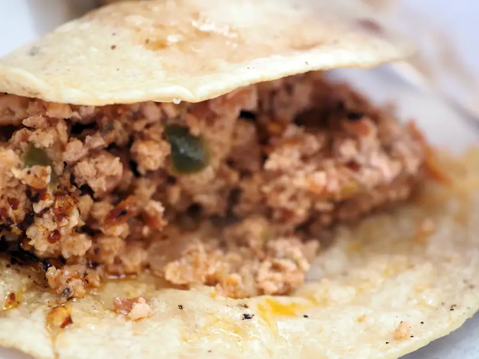
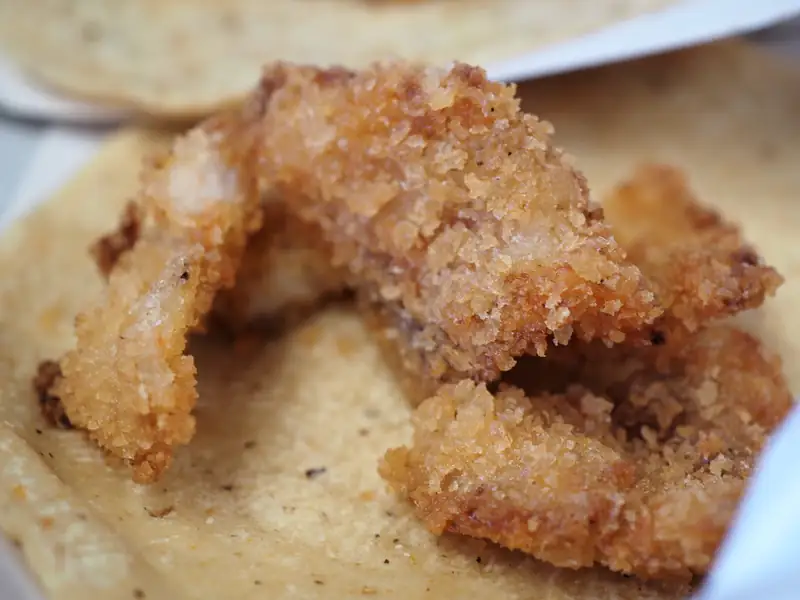
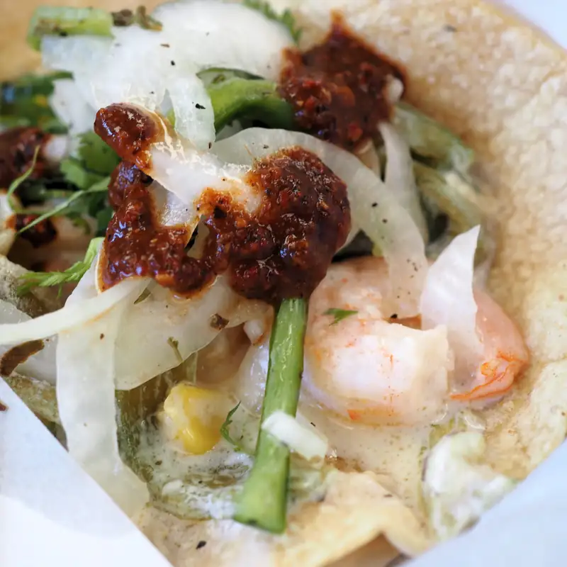
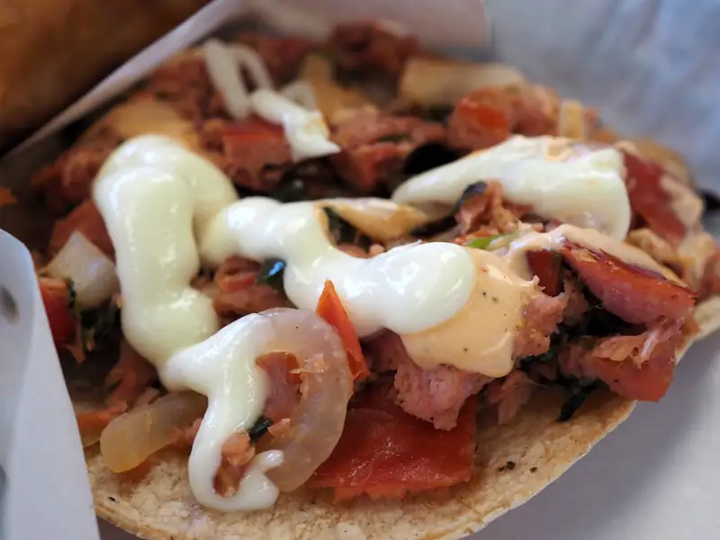
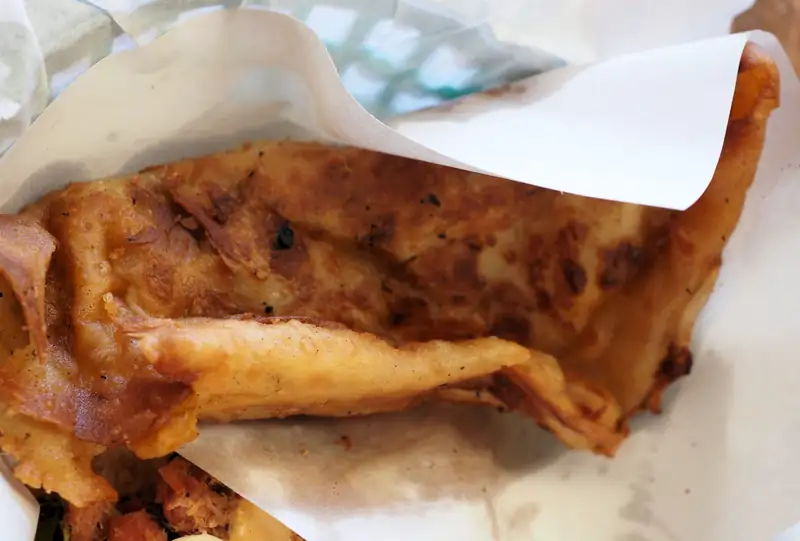
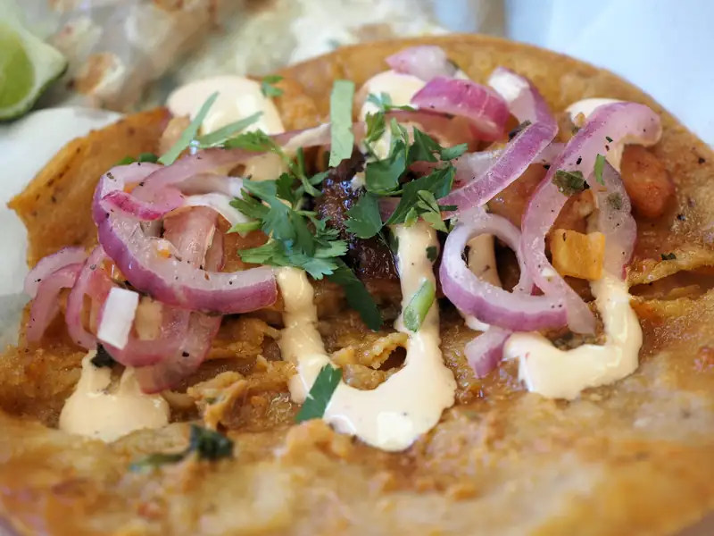

Tacos La Avioneta 2023
Uno de nuestros favoritos cuando visitamos Ensenada, tanto asi que... bueno, es como la tercera vez que vamos. Pero... sucede como muchas veces, con la distancia empieza uno a apreciar lo que no tiene. Y estos tacos, ahora que lo pienso, si que son únicos; de marisco, ps si, si hay en otros lados están en la misma Ensenada, los de pescado, y los sinaloenses tienen los gobernador, pero si, ok, los de La Avioneta también tienen de esos pero ademas de otros tipos que tacos que hasta me atrevo a decir que son muy ensenadenses. Para empezar, hay "caldito" de caguatún, que supongo que si no eres de Ensenada, o al menos de la peninsula, no te toco que se hicieran caguamas seguido en tu casa y las razones por las que ahora usamos atún. Ademas tienen empanadas, tacos y tostadas de marlin, tacos de camarón con rajas, a la diabla y empanizados, hasta de chorizo de abulón, pero para mí, la piece de resistance: de pulpo
Aquí, sin ningún orden en particular: chorizo de abulón
 {kind=link}
Camarón empanizado
 {kind=link}
Camarón con rajas
 {kind=link}
Tostada de marlin
 {kind=link}
Empanada de marlin
 {kind=link}
Camarón a la diabla
 {kind=link}